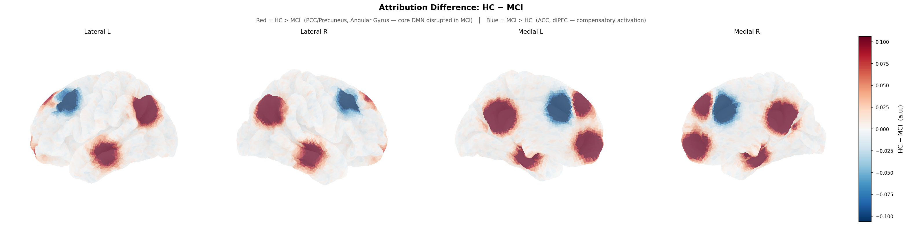

Raw fMRI Input
참여자 A

참여자 B

→
→
4D Representation
1 x D x H x W x T
1 x D x H x W x T
→
SwiFT Foundation Backbone
Patch Partition & Embed
Stage 1
Abs. Pos. Embed
4D Block x 2
Abs. Pos. Embed
4D Block x 2
Stage 2-3
Patch Merging
4D Block x Ls
Patch Merging
4D Block x Ls
Stage 4
Patch Merging
Global Attn x 2
Patch Merging
Global Attn x 2
Normalization Layer
Interpretation

Task Label / Prediction
Predicting...
[참여자 A]
참여자 A
MCI 위험도
MCI 가능성 매우 높음
실제 결과: MCI
Predicting...
[참여자 B]
참여자 B
MCI 위험도
건강한 뇌 (MCI 위험도 낮음)
실제 결과: HC (Normal)
Downstream Fine-tuning Head
Latent Representation
↓
Flatten Dim
↓
1D Avg Pooling
↓
Prediction Head